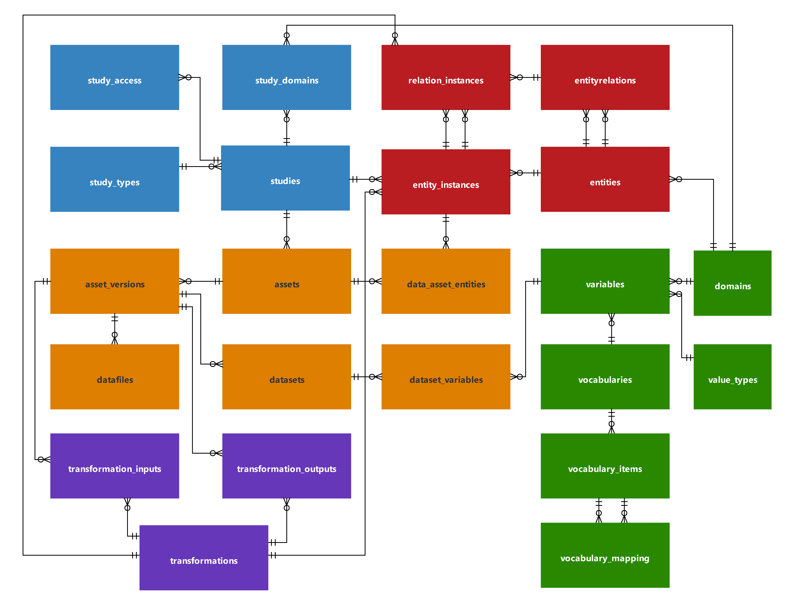

Introduction
This package creates and ingest data for the AHRI Trusted Research Environment into a PostgreSQL and ducklake managed data lake.
Datastore creation is done using the createdatastore function.
Data ingestion is specific to a study, where a study is any research study collecting data about entities and the relationships between these entities.
Database Structure
The conceptual model of the AHRI_TRE is shown in Figure 1. 
Data sources
The origin of the data is described in the following tables:
| Table Name | Description |
|---|---|
| sources | The entity responsible for distributing the data |
| sites | The surveillance site whre the data collection (or death) occured |
Data collection
The data collection protocol and ethical approval are described in the following tables:
| Table Name | Description |
|---|---|
| protocols | A data collection protocol |
| site_protocols | Links the protocols implemented at a site |
| protocol_documents | Documents describing the protocol |
| ethics | An ethics approval for data collection |
| ethics_documents | Documents describing the ethical approval |
Data collection instruments
The data collection instruments are described in the following tables:
| Table Name | Description |
|---|---|
| instrument | A data collection isnstrument |
| instrument_documents | Documents describing the instrument, or instrument questionnaire |
| protocol_instruments | The instruments covered by a particular protocol |
| instrument_datasets | Datasets collected by this instrument |
Data ingest
An instance of a data ingest into the Reference Death Archive is described by the following tables:
| Table Name | Description |
|---|---|
| data_ingestions | Records the data ingest instances |
| transformations | Documents the data transformation (extraction, transformation and loading) |
| transformation_types | Whether the transformation operates on raw (data ingest) or existing datasets |
| transformation_statuses | Whether the transformation has been verfied or not |
| ingest_datasets | The datasets containing the raw data from the data ingest |
| transformation_inputs | The dataset/s consumed by the transformation for a dataset transformation |
| transformation_outputs | The dataset/s produced by the transformation |
Data
The data itself is contained in the following tables:
| Table Name | Description |
|---|---|
| datasets | The dataset identifier and name |
| datarows | The row identifier for each row in the dataset |
| data | A variable - value pair for each variable in each row of the dataset |
| dataset_variables | The variables representing each column in the dataset |
Variables
The variables representing the data contained in the dataset, is described by the following tables:
| Table Name | Description |
|---|---|
| domains | Variable names are unique within a domain |
| variables | Documents a variable |
| value_types | Representing the different datatypes, variables can assume |
| vocabularies | The values a categorical variables can assume, are contained in a vocabulary |
| vocabulary_items | The individual categories (codes) in a vocabulary |
| vocabulary_mapping | The items of one vocabulary can be mapped to another vocabulary |
In the case of the CHAMPS data, the data dictionaries are manually extracted from the data distribution document and saved as csv files in the RDA repository. The format of the file is (the field separator is a semi-colon):
Column_Name: The variable nameKey:Yesif the variable is a key to the dataDescription: The description of the variable, if the description contains more than one line, in the case of a categorical variable, the vocabulary appears from line two onwards as comma separated text containing code and description.Note: A note regarding the variableDataType: The variable typeRDA_TYPE_INTEGER= 1RDA_TYPE_FLOAT= 2RDA_TYPE_STRING= 3RDA_TYPE_DATE= 4RDA_TYPE_DATETIME= 5RDA_TYPE_TIME= 6RDA_TYPE_CATEGORY= 7